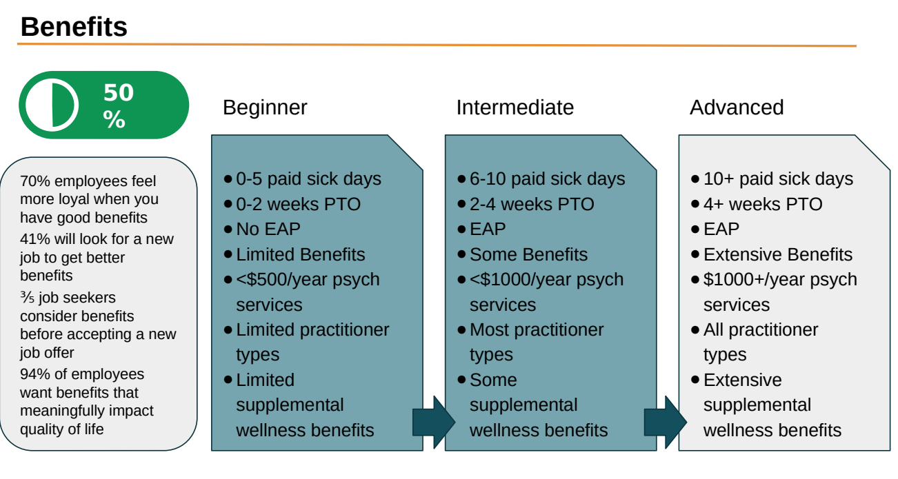
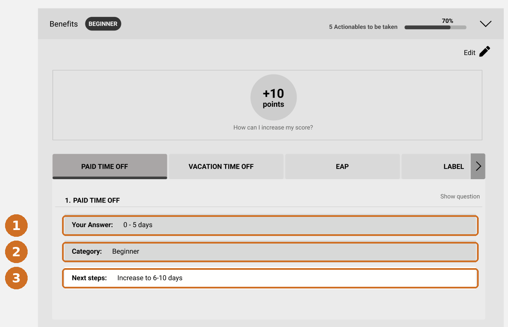
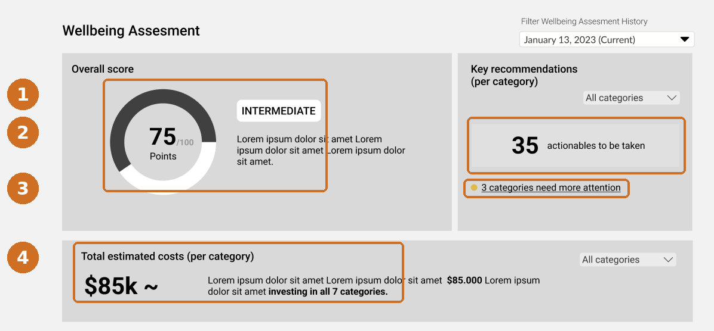

Sole researcher on a 0→1 B2B health-tech product. I built the measurement instrument and scoring system from scratch, defined V1 with the team, and ran the usability research that identified what would turn a one-off assessment into something HR leaders would subscribe to.
CheckingIn was an early-stage B2B health-tech startup. As the sole UX and product researcher, I built a research-grade workplace well-being assessment tool and analytics dashboard for HR leaders to evaluate, monitor, and improve their organization's policies and practices. Working across the 0→1 lifecycle, my research was aimed at one question: what would make senior HR leaders trust a new product, use it, and pay for it repeatedly. I interfaced between the board, the CEO, design, and engineering to translate an ambiguous business ambition into an evidence-based product and user direction.
The business goal was to build a well-being product HR leaders wouldn't just buy once, but return to and pay for repeatedly. That goal raised three intertwined unknowns:
I split the work into two jobs: reduce the ambiguity enough to commit to a roadmap and build, then test the experience of what we built. Foundational evidence defined what to build, evaluative sessions tested it with real buyers, and what came back fed into the roadmap. Throughout I prioritized studies by the decision they would change against what they would cost, which is why heavier survey psychometrics were ruled out at that stage.
I triangulated three evidence streams to decide what to build:
These streams converged into two outputs. The first was the measurement instrument itself: I built the survey and scoring system from scratch, combining expert knowledge, the research literature, and my survey-design expertise for rigour, credibility, and ease of use. The second was a product definition and V1 roadmap: a primary persona (mid-market HR leaders who own well-being but lack the tools to act), a differentiated position (continuous, benchmarked measurement versus competitors' point-in-time surveys and consulting), and a defined V1 - an assessment survey on workplace policies and practices with a dashboard to monitor results.
I wrote the assessment and the scoring rules myself. The item content came from three places: the academic literature on workplace well-being, institutional guidance and best-practice documentation from bodies such as the Canadian Mental Health Association, and working sessions with the senior HR leaders on our board.
The instrument covers seven categories - benefits, HR practices and policy, recruitment and onboarding, performance management, education and leadership development, wellness practices, and data collection and measurement - across roughly fifty items. Each item scores 0, 1 or 2 against a defined maturity level, each category carries its own point range, and thresholds within that range place an organization at Beginner, Developing or Advanced.
The decision that made the rest of the product possible was defining what counts as a recommendation. An item generates an action when an organization scores below the top level available on it, which excludes items where they already sit as high as the item allows. That rule is what lets a set of survey answers produce a specific, countable list of things to do, rather than a score with commentary attached.
Before the design work started, I ran a full worked example through the instrument: a fictional organization answering every item, scored across all seven categories, producing per-category levels and a complete recommendation list. That did two jobs. It checked that the scoring produced sensible, differentiated output rather than clustering everyone in the middle, and it gave our designer a concrete end-to-end journey to build against instead of an abstract spec.
To build and test these features, I ran a tight co-design loop with our designer: they shared Figma wireframes, and I annotated and revised them against what we'd learned about HR leaders' needs, mental models, and our product strategy. Once we had a working prototype, I ran moderated usability and prototype-testing sessions with the designer and HR leaders as participants (n=10).
The usability sessions were structured around three conceptual questions. Two returned quick fixes; the third surfaced a deeper problem that would reshape the product.
| Research question | Success metric | Result |
|---|---|---|
| Is the interface navigable? | Success rate & speed on key navigation tasks | 2 navigation pain points identified |
| Are the tools & data comprehensible? | Accuracy interpreting the dashboard's content | 2 comprehension issues identified |
| Would HR leaders value & repeatedly use it? | Qualitative willingness-to-pay evaluations | Critical repeat-use barrier: recommendations alone would not bring users back |
The navigation and comprehension findings were mostly quick fixes. Users struggled to find and change their organizational information, and did not understand where or how the dashboard would update after changing their inputs. One comprehension issue mattered more than it looked: every participant read the estimated-cost figure as the cost of implementing our recommendations, when it was meant to show the cost the organization was already carrying from its gaps. The number's meaning was inverted for everyone who saw it.
The third question was the one that changed the roadmap. Participants liked the recommendations. They said so directly: the concreteness of the next steps and the sense of progress in the scoring were the parts they responded to most. The barrier sat one layer above that. A list of actions they had no way to carry out made this a one-and-done assessment rather than a product to come back to, and several said plainly that having the resources to tackle those steps was what would make it worth subscribing to.
Research only changes anything if the people who make decisions act on it, so I built a working relationship with each part of the team. With the CEO and the board's HR leaders, I earned trust over time - turning their goals and expertise into research questions, and treating the HR leaders as subject-matter partners so the user's voice carried weight alongside the business's. That trust let me shape the roadmap without formal authority. With our designer, the work was a continuous co-design loop. Before they built anything out, I worked the concept up in low fidelity myself and brought it to them, so we were aligned on the goal and the roadmap before wireframing started. They took it into the product's branding with proper wireframes and journey flows. Because they sat in on the sessions and saw the evidence firsthand, they owned the design findings, and we brought recommendations to leadership together. With the PM, I matched my engagement to the decisions they owned - once research set the direction, I briefed them on the goals, personas, and roadmap rationale so they could scope and sequence the build on solid evidence, and when findings shifted priorities (as with the actionability pivot) they heard it from me first. With engineering, I translated what we were learning into terms they could act on, so early builds reflected the research.

I treat synthesis as triangulation toward a decision. I start by validating the data - face-validity and convergent-evidence checks, because a metric only counts if it's measuring what we intended. That same alertness to a mismatch between expected and observed is what made me stop and probe when the usability sessions surfaced a signal that didn't fit my protocol. Once validated, I read results up the ladder - from each success metric, to what it operationalized, to the conceptual question and the goal behind it - so no finding stands in isolation. And I treat delivery as part of the method: I framed the key finding in the team's own terms ("this is what will bring HR leaders back"), and passed insights along in the tools people already used rather than a deck they'd have to translate.
The research shaped the product at two levels, and I owned both.
Upstream, it defined what we built. The foundational triangulation set the target persona, the differentiated position, and the scope of V1. The instrument and scoring system underneath the product were mine end to end: the item set, the maturity levels, the thresholds, and the rule that turns a set of answers into a specific list of actions. That rule is what the dashboard counts, what the report is organized around, and what the recommendation feature was built on.
Downstream, it changed what the product was for. The willingness-to-pay evidence was unambiguous about where the value sat. Measurement was not the thing HR leaders would pay for repeatedly, and neither was a list of recommendations on its own. What they said they would pay for was support in carrying those recommendations out. I brought that forward as a product-direction problem rather than a set of interface fixes, and leadership and I reprioritized the roadmap together, away from surfacing an assessment and toward supporting execution of what it recommended - policy templates, training resources, and expert guidance attached to the actions the assessment identified.
The result was a product direction grounded in what buyers had told us, in their own words, would make it worth paying for.
Reprioritizing toward recommendations is easy to agree on in a roadmap meeting and hard to specify. Someone has to decide what a recommendation is inside the interface.
The unit is three fields: the answer the organization gave, the maturity level that answer places them at, and the specific next step that moves them up one level. Everything else in the product aggregates that unit.

Aggregated, that unit produces the two things the sessions said HR leaders were missing: how many concrete actions are outstanding and where, and what the gaps are costing them.

A score tells an HR leader where they stand. A costed, counted list of next steps gives them something to take into a budget conversation, which is the form the evidence said the product needed to take.
The gap between showing someone a number and helping them act on it recurs across data-forward products, and it is usually measured badly. Engagement with a dashboard is not the same thing as the dashboard being useful, and the two can move in opposite directions.
What made the difference here was asking a willingness-to-pay question alongside the usability questions, and then treating an answer that fell outside the protocol as evidence rather than noise. That is what took the work from a list of interface fixes to a product direction that buyers had told us they would pay for.
Screens shown are unfinalized design wireframes with placeholder content. Product metrics, client names, and the assessment instrument itself are omitted.